est une marque fictive spécialisée dans l'éclairage connecté.
L'objectif est de proposer des produits modernes qui permettent aux utilisateurs de personnaliser leur environnement lumineux tout en améliorant leur confort quotidien, leur bien-être et leur consommation énergétique. Sa promesse : la lumière suit ta journée, de l'aube à la nuit, toute seule. Sa signature : « Ta lumière. Ton rythme. »
La marque vise principalement :
les jeunes actifs ;
les amateurs de technologies ;
les particuliers souhaitant moderniser leur logement ;
les personnes sensibles aux économies d'énergie.
Pourquoi LumexIA change la donne ?
💡
La lumière suit la journée : le mode Lumex Sense passe d'une lumière orangée au réveil à un blanc net en journée, puis à une lueur ambrée le soir. Automatiquement.
🌱
Les économies, on les voit : l'application affiche une estimation de la consommation de chaque lampe, avec la méthode de calcul.
📱
Simple et ouvert : sans abonnement, compatible Matter, installation sans outil.
🎨
Design sobre : des objets ivoire et bleu nuit qui se fondent dans un intérieur, sans gadget clignotant.
Envie de découvrir le résultat final ?
Avant de parcourir ce rapport, nous vous invitons à visiter directement le site LumexIA.
Vidéo Veo 3 de 10 s, moodboard, storyboard, prompt
video/
Landing page de campagne
Black Friday « On rallume »
campagne/, site/black-friday/
Notre méthode en une phrase
Comme au séminaire, nous avons d'abord écrit les fichiers .md de la marque (projet, cible, charte, ton, produits), puis nous avons produit tous les contenus à partir de ces fichiers. L'IA lit toujours ces règles avant d'écrire, ce qui garantit la cohérence entre le site, les images, les posts et la vidéo.
Les étapes
#
Étape
Ce qui s'est passé
1
Première version (séminaire)
Logo, page d'accueil et fiche produit avec Gemini, Google Stitch et Antigravity.
2
Système de marque
Claude Code lit les consignes et le dépôt du séminaire, puis rédige les 6 fichiers .md et les skills.
3
Site et prompts d'images
Génération du site et de 29 prompts pour Gemini, avec l'ordre de génération.
4
Images
Nous générons les images dans Gemini ; Claude Code les importe, détoure le logo et efface une marque d'autrui.
5
Corrections
Nous demandons des cartes produits plus légères (badge, informations, position des prix).
Site en ligne sur Netlify ; rapport généré en PDF.
II. Choix des outils IA
Plusieurs outils IA ont été utilisés à différentes étapes du projet. Chaque outil avait un rôle précis dans la conception et la mise en œuvre.
Claude Code (modèle Opus 5.5)
Claude Code a été notre agent principal. Contrairement à un simple chat, il travaille directement dans le dossier du projet : il lit les consignes, rédige les fichiers .md de la marque, écrit les skills (des instructions réutilisables), code le site, prépare les prompts d'images et de vidéo, retouche les images, teste le site dans un navigateur et publie chaque étape sur GitHub.
Il vérifie aussi son propre travail avec des scripts : contrastes des couleurs, longueur des textes SEO, jours de la semaine, calculs de prix et affichage sur mobile.
Gemini (images) et Veo 3 (vidéo)
Gemini a généré les 29 images du projet (logos, photos produit, ambiances, cibles) à partir des prompts préparés par Claude Code. Veo 3, dans Gemini, a généré la vidéo de 10 secondes, avec le son.
Zeoob
Zeoob nous a servi à créer des maquettes de posts Instagram, pour montrer le rendu réel des publications.
Google Stitch et Antigravity (première version)
Pendant le séminaire, nous avions commencé avec Gemini pour rédiger les prompts, Google Stitch pour transformer ces prompts en maquettes de pages et Antigravity pour assembler le site. Une partie du travail avait dû être faite à la main, notamment les boutons. Pour la version finale, nous avons tout repris avec Claude Code, qui pouvait garder les règles de la marque en mémoire d'un bout à l'autre du projet.
GitHub et Netlify
GitHub garde chaque étape du projet dans un historique. Netlify met le site en ligne : chaque envoi sur GitHub le met à jour automatiquement.
III. Le système de marque
Avant de créer le moindre contenu, nous avons fait écrire à l'IA les fichiers de la marque. Ce sont ses règles du jeu : elle les relit avant chaque tâche.
Fichier
Contenu
brand/projet.md
Le projet, la cible (4 segments et leurs personas), le positionnement « premium accessible et bien-être », les valeurs et les lignes rouges. Prioritaire en cas de conflit.
brand/value_proposition.md
Value Proposition Canvas des 4 segments : tâches, problèmes, bénéfices et message clé.
brand/design.md
La charte graphique : logo, couleurs, typographies, composants, photos.
brand/tone-of-voice.md
Le ton de voix et les règles d'écriture.
brand/produits.md
La gamme, les prix et les 7 fiches produits.
brand/systeme-de-marque.md
Le résumé en une page.
CLAUDE.md
Le mode d'emploi pour l'IA : ordre de lecture, règles, où trouver quoi. Chargé automatiquement à chaque session.
Les 4 segments
Segment
Persona
Message clé
Jeunes actifs
Sam, 27 ans, télétravail
« Une lumière pour bosser, une autre pour souffler. Sans changer d'appart. »
Amateurs de technologie
Noa, 31 ans, maison connectée
« Compatible avec ta maison. Pas l'inverse. »
Rénovation
Camille et Alex, 36 ans
« Une maison plus moderne. Sans tirer un seul câble. »
Économies d'énergie
Dominique, 48 ans
« Tu vois ce que tu consommes. Tu décides ce que tu éteins. »
Les lignes rouges, écrites dès le départ : aucune promesse de santé, aucun pourcentage d'économie sans méthode de calcul, pas d'écologie vague, aucun avis client, chiffre ou partenariat inventé, aucune marque d'autrui. Ces règles ont évité plusieurs erreurs (voir l'analyse critique).
Prompt utilisé
Claude Code
Je pensais à LumexIA : une marque spécialisée dans l'éclairage connecté. L'objectif est de proposer des produits modernes permettant aux utilisateurs de personnaliser leur environnement lumineux tout en améliorant leur confort quotidien, leur bien-être et leur consommation énergétique. La marque vise principalement : les jeunes actifs, les amateurs de technologies, les particuliers souhaitant moderniser leur logement, les personnes sensibles aux économies d'énergie.
On avait déjà dû faire ça pendant le séminaire, donc je te donne un lien GitHub pour lire tout le code et te baser là-dessus (lis bien les fichiers .md, parce qu'il faudra faire ça d'abord avant de créer le site).
IV. Logo
Le logo devait traduire l'idée de la marque : une lumière qui s'allume au bon moment. Il devait être lisible dans l'en-tête du site comme en icône d'application.
Le nom : Lumex vient de lumen (l'unité de lumière) et de ex pour « expérience » ; IA désigne la lumière intelligente.
Le « x » de lumex est formé de deux faisceaux de lumière qui se croisent, avec un petit halo ambré à leur croisement : une lampe qui s'allume.
Typographie bicolore : « lumex » en bleu nuit, en minuscules, pour la douceur ; « IA » en ambre pour la touche technologique.
L'icône reprend un arc de lumière posé sur l'horizon : à la fois un lever de soleil, un abat-jour et un bouton marche.
Visuels
Le logo tel que Gemini l'a généré : fond ivoire et une copie floue parasite au-dessus du mot.
Après détourage par Claude Code : PNG transparent, copie floue supprimée, version principale et version inversée.
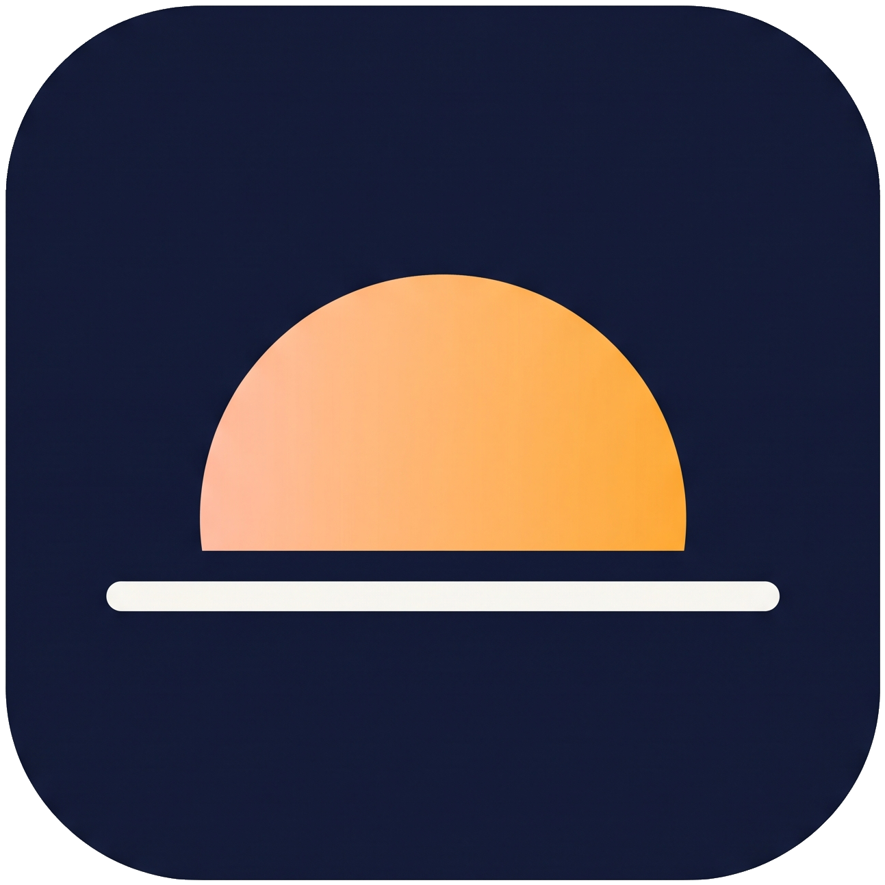
IcôneAvatar rond (réseaux, Zeoob)
Prompt utilisé
Gemini · prompt préparé par Claude Code
Create a clean, professional flat vector logo on a plain warm ivory background (#FAF7F2), wide 16:9 format, logo centered with generous empty space around it.
The logo is the lowercase wordmark "lumex" followed immediately by a smaller uppercase "IA", forming the brand name "lumexIA". Spelling must be exact: l-u-m-e-x then I-A. No other text.
Typography: a modern geometric sans-serif typeface, semi-bold, with round "u", "m" and "e", similar in spirit to the Sora typeface. The letters "lume" are solid deep navy blue (#10162B).
The key idea: the letter "x" is drawn as two crossing beams of light. Its two strokes are deep navy (#10162B) with rounded ends, and exactly at the point where they cross there is a small glowing warm amber dot (#FFB547) with a soft, subtle halo, like a tiny light being switched on.
The "IA" is smaller (about 55% of the height of "lume"), bold, in warm amber (#FFB547), sitting on the same baseline right after the "x".
Style: flat vector, perfectly crisp edges, no gradients except the very soft halo around the amber dot, no 3D, no shadow, no outline, no mockup, no tagline, no icon next to the wordmark. Minimal, calm, premium, tech brand.
Claude Code
J'ai mis toutes les images à la racine, je te laisse les déplacer où il faut. Juste le logo : enlève le fond, s'il te plaît.
Le prompt est en anglais, parce que Gemini suit mieux les détails dans cette langue. Les codes couleur de la charte y sont écrits pour obtenir exactement le bleu nuit et l'ambre de la marque. Claude Code a ensuite écrit un script de détourage, qui a aussi supprimé la copie floue ajoutée par Gemini.
V. Charte graphique et ton
Toute l'identité suit la lumière d'une journée : l'aube ambrée, le jour clair, le soir chaud, la nuit profonde. Le site a deux ambiances, Jour et Nuit, et un seul motif récurrent : l'arc de lumière en dégradé.
Couleurs
Nuit #10162B
Ivoire #FAF7F2
Ambre #FFB547
Aube #FFE2B8
Bleu #3D5AFE
Brume #E7EAF3
Ardoise #5A6178
Chaque association de couleurs a été vérifiée par script selon la norme d'accessibilité WCAG (contraste minimal de 4,5:1). Exemple de règle qui en découle : le bouton principal est ambre avec un texte bleu nuit, jamais blanc, car le blanc sur ambre serait illisible.
Typographies
Usage
Police
Exemple
Titres, logo, prix
Sora
Ta lumière. Ton rythme.
Textes et boutons
Inter
Les lampes LumexIA adaptent leur lumière au moment de la journée.
Données techniques
JetBrains Mono
806 lm · 2200–6500 K · 9 W
Style visuel
Deux familles de photos : les photos produit (produit seul, fond gris-bleu uni, format carré) et les photos d'ambiance (vrais intérieurs, la lumière du produit est la source principale, l'heure se lit à la couleur de la lumière). Pour éviter l'effet « image IA », chaque prompt d'ambiance se termine par la même consigne : photographie naturelle, léger grain, pas de rendu 3D. Interdits : texte ou logo dans l'image, enfants, néons.
Ton de voix
Trois traits de personnalité : lumineux, apaisant, malin. On tutoie, on écrit des phrases courtes et on commence par le moment de vie avant le produit (« 18 h, l'écran fatigue tes yeux »). On écrit « t'aide à préparer ton sommeil », jamais « améliore ton sommeil ».
Consignes données à l'IA
Extrait de CLAUDE.md, relu par l'IA avant chaque tâche
Couleurs : Nuit #10162B, Ivoire #FAF7F2, Ambre #FFB547 (bouton : texte Nuit, jamais blanc), Aube #FFE2B8, Bleu circadien #3D5AFE, Brume #E7EAF3, Ardoise #5A6178.
Typographies : Sora (titres), Inter (textes), JetBrains Mono (données techniques).
Ton : tutoiement, phrases courtes, lumineux, apaisant, malin. Le moment de vie avant le produit.
Accessibilité : contraste ≥ 4,5:1, focus visible, cibles ≥ 44 px, aucun clignotement.
VI. Fiches produits
Les fiches produits devaient donner toutes les informations utiles avant un achat, dans le ton de la marque et avec des chiffres compréhensibles. Nous en avons créé sept.
Produit
Type
Prix TTC
Lumex Bulb
Ampoule connectée E27
17,90 € (lot de 3 : 44,90 €)
Lumex Strip
Ruban LED connecté 2 m
49,90 €
Lumex Halo
Lampe de bureau connectée
99,00 €
Lumex Aube
Réveil lumineux
79,00 €
Lumex Orbe
Lampe d'ambiance sans fil
69,00 €
Lumex Switch
Interrupteur sans fil, sans pile
29,90 €
Pack Départ
3 Lumex Bulb + 1 Lumex Switch
69,00 € (au lieu de 83,60 €)
La fiche Lumex Halo sur le site.
Visuels et contenu
Chaque fiche contient une accroche, une description, quatre points clés, un tableau de caractéristiques, le contenu de la boîte, un titre et une description pour Google (longueurs vérifiées par script) et le texte alternatif des photos.
Chaque chiffre est traduit : « 806 lumens, l'équivalent d'une ampoule classique de 60 W ». Ce qui n'est pas décidé n'est pas inventé : la classe énergétique est notée « étiquette énergétique à venir », et il n'y a aucun faux avis client.
Les fiches sont produites par un skill : un fichier d'instructions que Claude Code charge dès qu'une tâche correspond. Une seule phrase (« Fais la fiche du Lumex Orbe ») suffit alors pour obtenir une fiche complète et conforme.
Prompt utilisé : le skill « fiche produit »
Skill lumexia-fiche-produit (extrait), écrit pour le projet
Reprends le prix et les caractéristiques exactement comme dans brand/produits.md. Choisis le segment principal et reprends son message clé.
Structure : nom « Lumex + nom », prix TTC, accroche (un moment de vie), description de 3 à 4 phrases, 4 points clés, tableau de caractéristiques (chaque unité traduite au moins une fois), SEO (title < 60 caractères, meta de 120 à 155, compte avec un script), texte alternatif de 8 à 15 mots.
Interdits : promesse de santé, économie chiffrée sans méthode, avis ou stock inventé, classe énergétique inventée.
VII. Site web : page d'accueil
La page d'accueil devait présenter rapidement la marque et son univers, mettre en avant les produits et rester claire et facile à parcourir, sur ordinateur comme sur mobile.
Le site compte 15 pages : accueil, catalogue, 7 fiches produits, Lumex Sense, La marque, Aide, la landing page Black Friday, mentions légales et page 404. Chaque page a un en-tête avec le menu, un interrupteur Jour / Nuit qui change l'ambiance de tout le site, un pied de page complet et un panier de démonstration.
Visuels
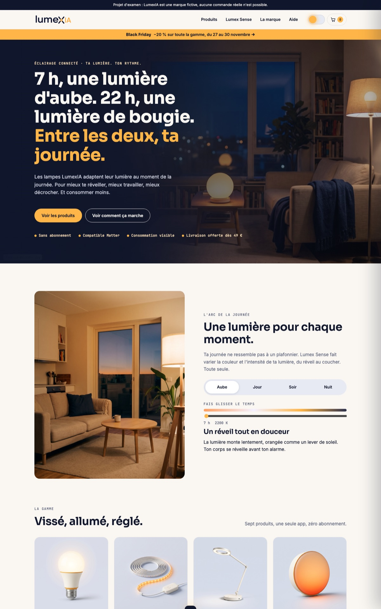
L'accueil : le hero en ambiance soir, puis l'arc de la journée interactif.
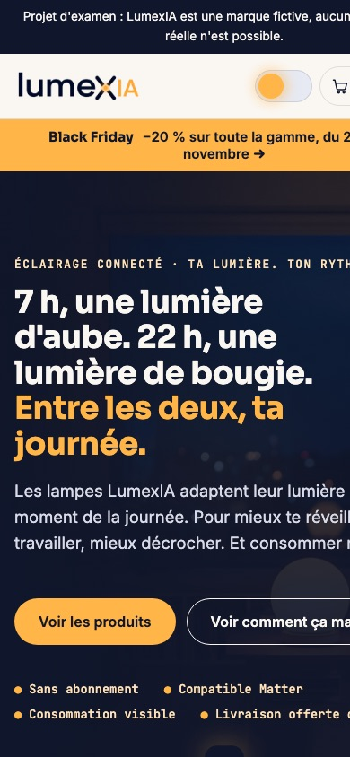
Sur mobile.
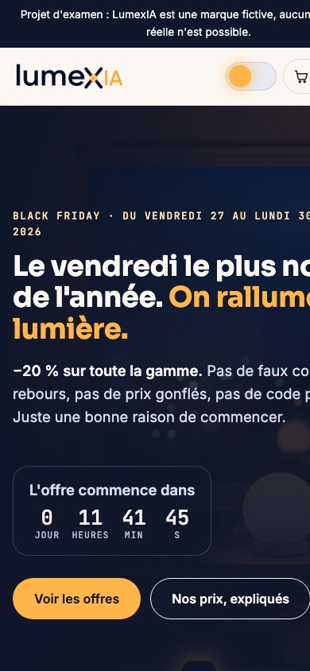
Black Friday sur mobile.
L'arc de la journée : on fait glisser le temps et le salon change de lumière. C'est la promesse de la marque, rendue visible.
Un calculateur d'économies qui affiche sa méthode de calcul.
Testé par Claude Code : panier, livraison offerte dès 49 €, mode Jour/Nuit, affichage mobile, contrastes, SEO.
Prompt utilisé
Claude Code
Oui, fais le site. Je génère les images moi-même, donne-moi juste les différents prompts dont tu as besoin (logo, images du site, etc.). Sois complet, c'est pour Gemini.
Ce prompt est court parce que tout le reste (cible, couleurs, ton, prix) était déjà dans les fichiers .md. Claude Code a généré le site et, en même temps, les 29 prompts d'images pour Gemini, avec leur nom de fichier : tant qu'une image manquait, le site affichait un halo coloré à sa place.
Itération : nos corrections
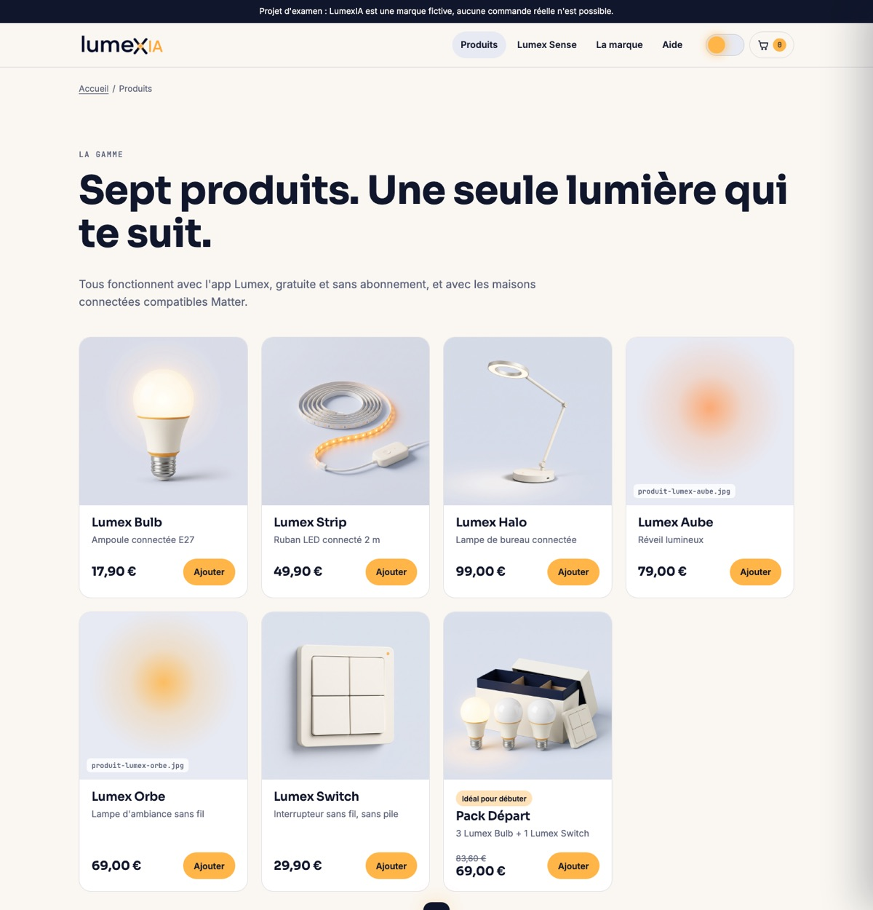
Le catalogue après correction : badge court, sans ligne technique, ancien prix au-dessus du prix.
Claude Code
Dans les produits, le badge « Le plus simple pour commencer » est bizarre : fais un truc plus court, en 2 ou 3 mots, sur une ligne. Enlève les infos « sans fil, 4 scènes », etc. Et mets l'ancien prix en petit au-dessus du prix actuel, pas à côté.
C'est en regardant le site que nous avons trouvé les cartes produits trop chargées. L'IA a corrigé, puis vérifié le résultat dans le navigateur.
VIII. Photos
Il fallait des photos cohérentes : le même produit d'une image à l'autre, la même lumière et le même style. Claude Code a écrit 29 prompts pour Gemini, avec un mode d'emploi. L'idée clé est l'ordre de génération : on crée d'abord les photos produit, qui servent de référence, puis on les joint aux prompts d'ambiance pour que le même objet apparaisse partout.
Visuels
Produit : Lumex Bulb
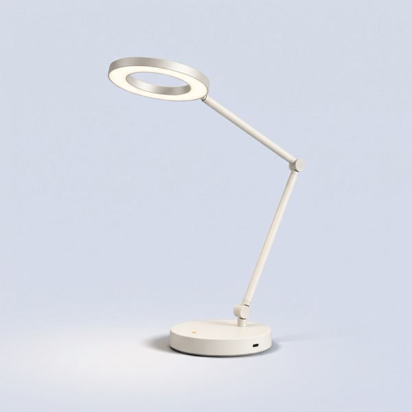
Produit : Lumex Halo
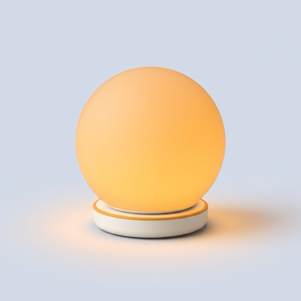
Produit : Lumex OrbeAmbiance : Lumex Aube
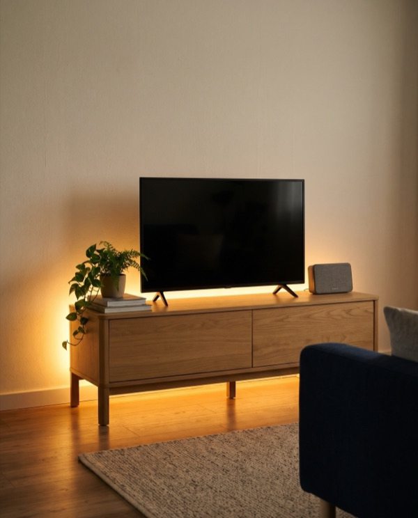
Ambiance : Lumex Strip
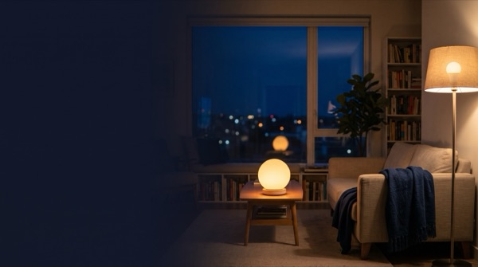
Hero de l'accueilCible : jeunes actifs
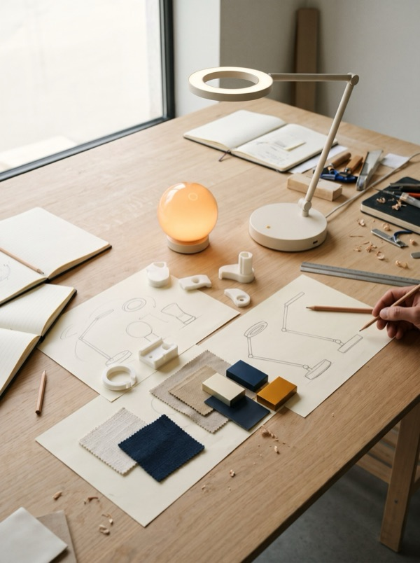
Marque : l'atelier
Après la génération, Claude Code a vérifié chaque image : il a corrigé deux noms de fichiers mal tapés et effacé un logo Nike repéré sur une basket, car la charte interdit toute marque d'autrui.
Prompt utilisé
Gemini · photo produit Lumex Bulb
Professional e-commerce product photograph, square 1:1 format.
A single smart LED light bulb standing upright, centered, seen from a slightly low three-quarter angle. Classic A60 bulb shape. The glass is milky opal white and the bulb is switched on, glowing a soft warm white (about 2700K). The base housing is matte ivory polycarbonate (#FAF7F2) with a thin warm amber ring (#FFB547) where the base meets the glass. A standard silver E27 screw cap at the bottom.
Background: seamless, perfectly plain light blue-grey (#E7EAF3), no texture, no props. Soft diffused studio lighting from the upper left, a soft natural contact shadow under the product.
Photorealistic, sharp focus on the product, high-end minimal tech brand catalog style, accurate colors.
No text, no letters, no logo, no brand name, no watermark, no hands, no other objects.
Gemini · modification d'image pour la série « arc de la journée »
Edit this exact image. Keep the room, the furniture, the objects, the viewpoint and the framing strictly identical.
Change only the time of day and the light: it is now 11 am on a bright day. Clear daylight comes through the window, the sky is light blue. The floor lamp is on at low intensity with a clean neutral white light (about 4500K).
No text, no logo, no people.
IX. Réseaux sociaux
L'objectif était de préparer une vraie semaine de publications autour du Black Friday, sur Instagram, TikTok et LinkedIn : 9 publications et 14 visuels prêts à publier, chacun avec sa cible, sa date, sa légende, ses hashtags et son texte alternatif.
Visuels
Story : veille du Black Friday
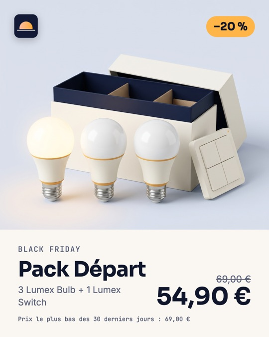
Post : Pack DépartCarrousel : couvertureCarrousel : 7 hPost : Lumex HaloLinkedIn : nos valeurs
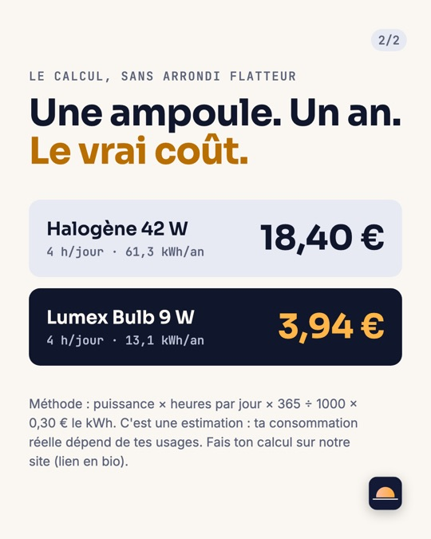
Carrousel : le calcul
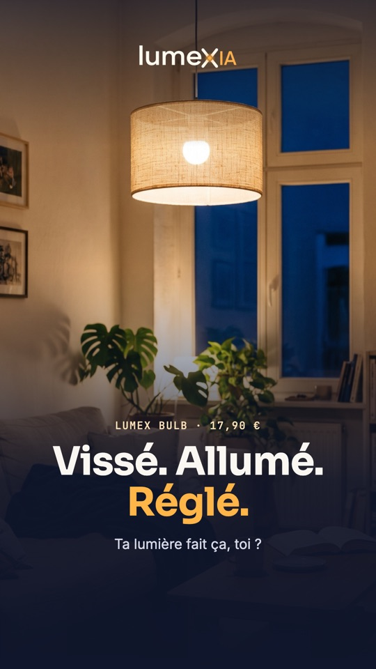
Couverture du reel
Gemini fait la photo, le code fait le texte. Les générateurs d'images écrivent souvent mal le texte. Claude Code a donc créé des gabarits aux couleurs de la charte, qui ajoutent le texte, le logo et les prix sur les photos Gemini : le texte est net et sans faute.
Prompt utilisé
Claude Code · avec le skill lumexia-post-reseaux
Fais les posts pour les réseaux sociaux maintenant.
Exemple de légende obtenue (post Lumex Halo) : « POV : il est 18 h et ta lampe a compris avant toi qu'il était temps de lever le pied. 🌙 Lumex Halo éclaire ton bureau d'un blanc net pendant la journée, puis passe à une lumière plus chaude en fin d'après-midi. Le signal que tu peux fermer l'ordi. 99 €, sans abonnement. »
Les maquettes Zeoob
Nous avons mis les posts en situation sur Zeoob, avec un avatar rond du logo créé par Claude Code.
Claude Code
Tu sais me générer le logo LumexIA dans un rond pour créer un post sur Zeoob ?
Insérer ici 2 ou 3 captures d'écran des posts Zeoob.
X. Vidéo
« Une journée de lumière » : le même salon, du lever au coucher. La caméra ne bouge pas, c'est la lumière qui raconte la journée, comme le fait Lumex Sense. La vidéo a été générée avec Veo 3 : un plan unique de 10 secondes, en accéléré, avec le son.
Le moodboard : images de référence, palette et mots-clés d'ambiance.Le storyboard : quatre moments en 10 secondes, avec le son et la voix off.
Prompt utilisé
Veo 3 · prompt préparé par Claude Code
A static wide shot of the same cozy, lived-in apartment living room, filmed as a smooth time-lapse of one full day in 8 seconds. Beige fabric sofa with navy blue cushions, round light-wood coffee table, a floor lamp with a linen shade, a small round glowing table lamp, a large balcony window with a city view, green plants, a bookshelf.
The story is told only by the light. It starts at dawn: blue morning light outside, the lamps glow a soft orange (2200 K) and slowly brighten. Then daytime: bright, neutral white light fills the room. Then evening: the sky turns deep blue and the lamps shift to a warm amber glow (2700 K), dimmer and cozy. It ends at night: everything is dark except one small round lamp giving a low amber glow.
Camera locked on a tripod, no camera movement. Natural interior photography, soft real-world light falloff, subtle film grain, realistic, not a 3D render, not glossy, not oversaturated. No people. No text, no logos, no brand names.
Audio: gentle ambient sound evolving with the day, distant birds at dawn, soft city murmur at noon, quiet evening, calm silence at night, with a soft, warm piano melody. A calm, warm female voice says in French: "Ta lumière suit ta journée. Toute seule."
Un seul plan en accéléré : Veo 3 produit des plans courts ; un accéléré montre toute la journée sans montage.
Caméra fixe et aucune personne : le seul personnage, c'est la lumière. Cela évite aussi les visages générés par l'IA.
Les températures de couleur (2200 K, blanc neutre, 2700 K) sont celles de Lumex Sense et du site.
Aucun texte demandé à Veo, qui l'écrit mal ; le logo et la signature peuvent s'ajouter au montage.
XI. Landing page de campagne
L'idée : « On rallume ». Le Black Friday est le vendredi « noir » ; LumexIA est une marque de lumière, alors elle rallume. La campagne prend le contre-pied des Black Friday agressifs : pas de faux compte à rebours, pas de prix gonflés, pas de « dernières pièces ».
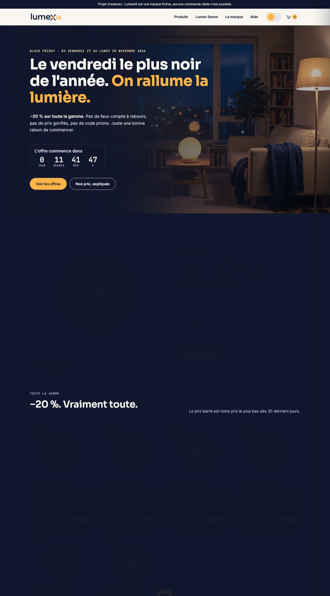
La landing page, en ambiance Nuit comme le prévoit la charte.
Élément
Choix
Offre
−20 % sur toute la gamme, du vendredi 27 au lundi 30 novembre 2026
Cible
Les amateurs de technologie, qui attendent le Black Friday pour s'équiper
En vedette
Pack Départ à 54,90 €
Compte à rebours
Suit les vraies dates : « commence dans… », « se termine dans… », puis « terminée »
Le respect de la loi, vérifié par script. La directive européenne Omnibus impose d'afficher, à côté d'une réduction, le prix le plus bas des 30 derniers jours. Le prix barré du Pack Départ est donc 69 €, et non 83,60 € (le prix des 4 produits achetés séparément), qui aurait gonflé la réduction.
Prompt utilisé
Claude Code
Fais la landing page Black Friday maintenant.
Avant d'écrire la page, Claude Code a rédigé un brief de campagne, vérifié les dates et calculé chaque réduction. Il a ensuite écrit un skill, lumexia-landing-campagne, pour refaire la même chose à la Saint-Valentin ou au printemps.
XII. Workflow IA : agents et sous-agents
Notre workflow repose sur un agent principal qui orchestre, des sous-agents spécialisés qui ont chacun un rôle précis, et nous, qui décidons et validons.
CLAUDE.mdLu à chaque sessionbrand/*.mdProjet, charte, ton, produitsLignes rougesCe que l'IA ne fait jamais
Agent principal
Claude CodeLit, planifie, écrit, exécute, vérifie, publie
Sous-agents (skills)
Fiche produitPrompt visuelPost réseauxLanding de campagneVérification de marqueLe relecteur
Agents externes
GeminiImagesVeo 3VidéoZeoobMaquettes
Outils automatisés
ScriptsSite, visuels des posts, images, logos, ce rapportGitHub et NetlifyMise en ligne
Comment une tâche circule
Nous donnons la consigne, souvent en une phrase (« Fais la landing page Black Friday »).
L'agent principal relit la mémoire de marque et choisit le sous-agent adapté.
Le sous-agent suit ses étapes : par exemple, le skill de campagne écrit le brief, calcule les réductions, puis crée la page.
Les scripts vérifient (SEO, contrastes, dates, calculs, mobile) et le sous-agent de vérification relit le contenu.
Pour les images et la vidéo, l'agent prépare les prompts, nous les lançons dans Gemini ou Veo 3, puis il contrôle le résultat.
Nous validons ou demandons une correction ; chaque étape part sur GitHub et Netlify met le site à jour.
Comment réutiliser ce workflow
Pour une nouvelle campagne LumexIA : une phrase suffit (« Fais la landing page de la Saint-Valentin »), les skills de campagne et de posts reprennent la même méthode.
Pour une autre marque : on remplace les fichiers de brand/, on adapte CLAUDE.md et le nom des skills, puis on relance les scripts ; le site, les visuels et le rapport se reconstruisent.
Pour aller plus loin : lancer de vrais sous-agents en parallèle (un par livrable), et un relecteur indépendant qui n'a pas écrit le contenu.
XIII. Analyse critique
L'utilisation de Claude Code, de Gemini et de Veo 3 nous a fait gagner énormément de temps : un système de marque complet, un site de 15 pages, 29 images, 9 publications, une vidéo et une campagne. La différence avec notre première version (Gemini, Stitch et Antigravity) tient surtout à une chose : les fichiers .md de la marque. Parce que les règles étaient écrites, l'IA les a appliquées partout, du site à la vidéo.
Cependant, les résultats n'étaient pas toujours directement exploitables. Gemini a ajouté une copie floue de notre logo, un logo de marque sur une chaussure et des noms de fichiers erronés ; un générateur d'images écrit mal le texte ; et un prix barré « logique » (83,60 €) aurait été illégal. Ces erreurs ont été corrigées parce que chaque résultat a été vérifié, par un script ou par nous.